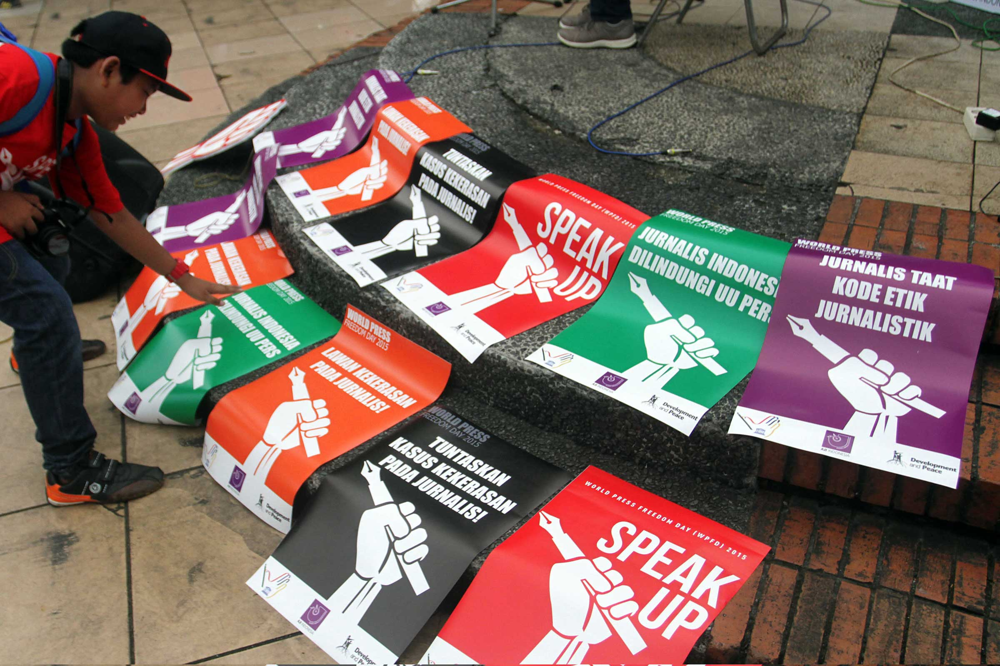
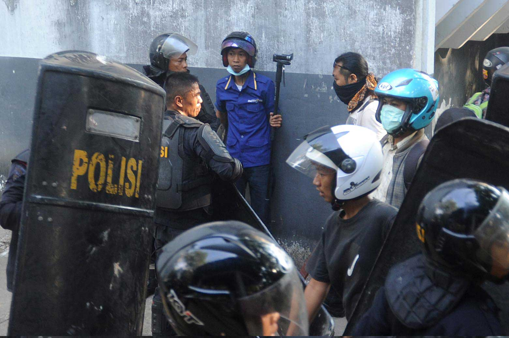
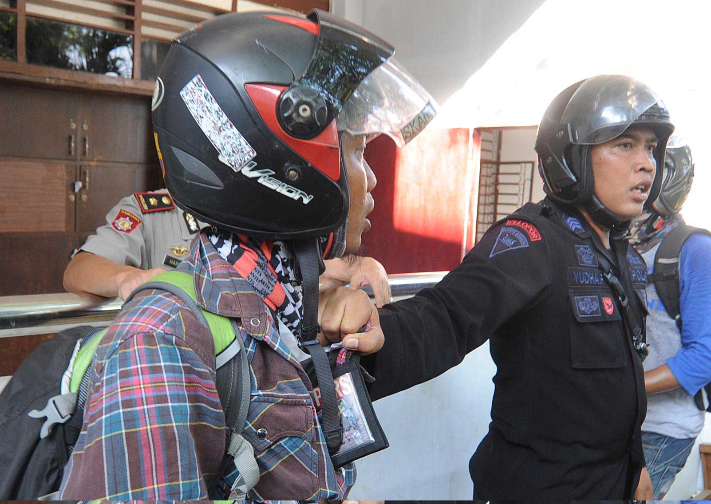
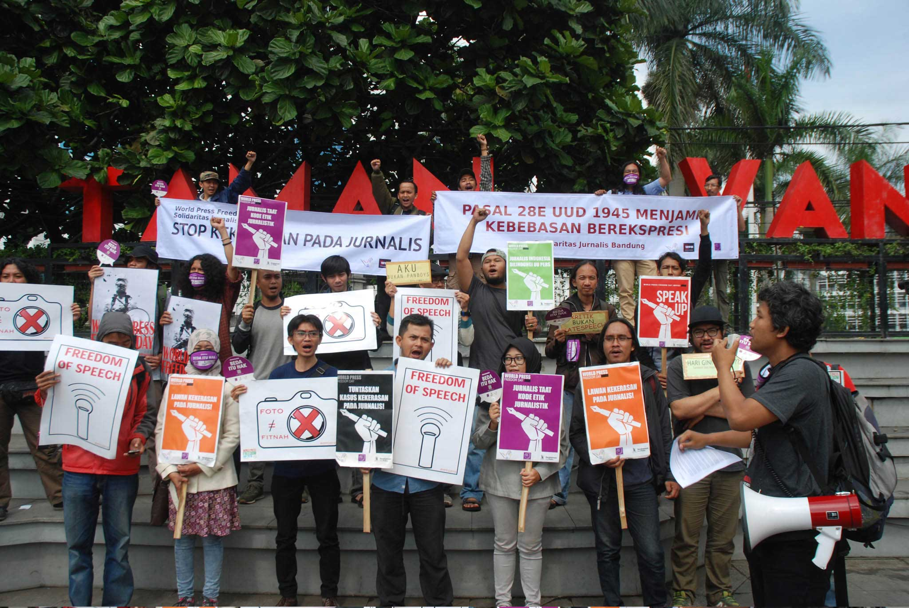
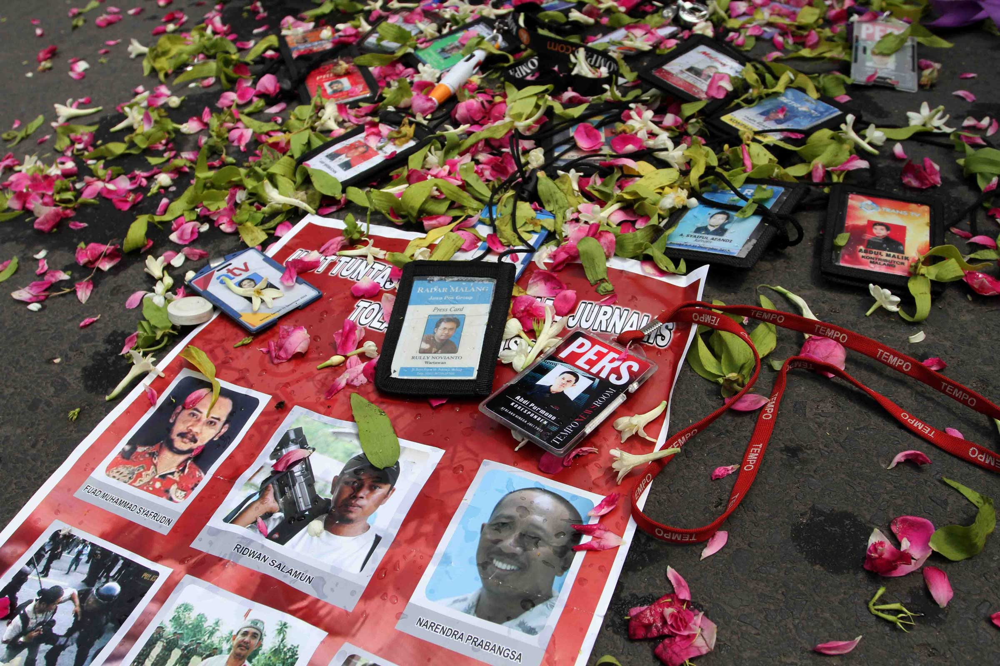

Meski mendapatkan perlindungan dari UU Pers sejak 1999, wartawan masih saja dihalang-halangi dalam bekerja. Mereka diancam, diperlakukan secara buruk, bahkan menjadi korban kekerasan fisik.
763 kasus kekerasan terhadap jurnalis sejak 2006 (Aliansi Jurnalis Independen.)
10 wartawan Indonesia terbunuh saat bertugas sejak 1996.
124 urutan Indonesia dibanding negara-negara lain dari aspek kebebasan pers (Reporters Without Border, 2019).
2 pasal di omnibus law RUU Cipta Kerja (pasal 11 dan 18) ditentang kalangan jurnalis karena menyerempet UU Pers.
Nibras Nada Nailufar, 25 tahun, merasa jerih setiap melintasi markas Polda Metro Jaya. Jurnalis Kompas.com ini trauma terhadap intimidasi polisi saat dia meliput #ReformasiDikorupsi, demonstrasi mahasiswa yang menolak rancangan undang-undang yang dianggap bermasalah di depan gedung DPR, pada Selasa malam 24 September 2019.
“Saya selalu deg-degan kalau lewat Polda atau ketemu polisi. Takut, duh, jangan-jangan ketemu orang yang tahu muka saya,” kata Ajeng, sapaan Nibras, kepada Tempo, Senin, 10 Februari 2020. Sedikit beruntung, kini Ajeng ditugaskan di luar Ibu Kota.
Semua bermula saat Ajeng melihat seorang yang diduga demonstran dihajar polisi, malam itu. Naluri wartawannya bekerja. Dia merekam peristiwa itu. Aksinya diketahui polisi lain yang meminta rekaman itu dihapus.
Di depan Jakarta Convention Center, Senayan, Ajeng sempat beradu mulut dengan polisi tersebut. Ia mengatakan, sebagai wartawan, pekerjaannya dilindungi Undang-Undang Pers.
Polisi itu tak mengindahkan dan berusaha merebut telepon pintarnya. Ajeng memasukkannya ke balik pakaian dalam. Tas dan tangannya ditarik. Seorang polisi bahkan nyaris memukulnya. Sampai akhirnya seorang yang diduga komandan polisi melindungi dan membawa Ajeng kembali ke dalam JCC. Dengan alasan hendak kencing, di toilet, ia mengirim video berdurasi sekitar dua menit itu ke atasannya di kantor.
Jurnalis Katadata.co.id, Tri Kurnia Yunianto, 28 tahun, yang juga meliput aksi #ReformasiDikorupsi mendapat perlakuan lebih buruk. Dia dikeroyok sejumlah anggota Brimob di pintu belakang kompleks DPR: dipukul, dijambak, ditendang, kendati sudah memberitahu dirinya wartawan dan menunjukkan kartu pers.
“Mereka membuka isi galeri telepon genggam saya dan menghapus semua gambar-gambar hasil liputan,” kata Kurnia kepada Tempo pada Jumat, 7 Februari 2020.
Sepanjang tahun 2019 catatan Aliansi Jurnalis Independen (AJI) menyebut 53 kasus kekerasan terhadap jurnalis terjadi. Dari 53 kasus, 30 di antaranya dilakukan polisi. Kekerasan terhadap jurnalis terus terjadi hingga kini.
Aliansi Jurnalis Independen mencatat terdapat 53 kasus kekerasan terhadap jurnalis selama 2019. Data dari Lembaga Bantuan Hukum (LBH) Pers bahkan lebih tinggi lagi, 79 kasus.
LBH Pers melaporkan kasus yang dialami Ajeng dan Kurnia ke Polda Metro Jaya. Selain dua kasus itu, mereka juga melaporkan kasus lainnya yang menimpa jurnalis Tirto.id, Haris Prabowo dan jurnalis Narasi TV, Vany Fitria. Haris dan Vany juga menjadi korban ketika meliput unjuk rasa #ReformasiDikorupsi. Haris sempat digelandang polisi dan hampir dimasukkan ke mobil tahanan, sedangkan Vany dirampas dan dirusak telepon genggamnya. Namun laporan tersebut ditolak dengan alasan kurang alat bukti.
Haris mengaku kecewa atas rumitnya penegakan hukum atas kekerasan yang dia alami. “Kalau kekerasan yang dilakukan aparat tidak diusut tuntas, akhirnya menjadi impunitas dan itu bisa terulang kembali. Menurut saya efek terbesarnya bakal ke situ,” kata Haris.
Ketua Bidang Advokasi AJI Sasmito Madrim mengatakan kekerasan terhadap jurnalis tercatat terus meningkat sejak 2009. Puncaknya pada 2016, mencapai angka 81 kasus. Meski menurun dalam tiga tahun terakhir, jumlahnya tak kurang dari 50 kasus. “Bentuk kekerasannya adalah sensor atau pelarangan pemberitaan, perusakan alat atau data hasil liputan, pengusiran/pelarangan liputan, pemidanaan/kriminalisasi, kekerasan fisik, intimidasi, serta ancaman kekerasan atau teror,” kata Sasmito kepada Tempo, Rabu, 5 Februari 2020.
Data jumlah jurnalis yang menjadi korban kekerasan pada 2015-2019. Data ini dibagi berdasarkan jenis kekerasan yang mereka terima. (Diolah dari berbagai sumber).
Pelaku kekerasan paling banyak personel kepolisian. Data AJI menunjukkan dari 53 kasus selama 2019, sebanyak 30 pelakunya aparat hukum tersebut. Sementara pelaku lainnya adalah warga, TNI, tidak dikenal, pejabat pemerintah, ormas, kader parpol, aparat pemerintah pusat, maupun akademisi.
Tingginya angka kekerasan ini tak linier dengan proses penegakan hukum. Ketua LBH Pers, Ade Wahyudin, mengatakan cuma 10 persen dari total kasus yang masuk catatan lembaganya pada 2019, diproses secara hukum. Ini termasuk kekerasan yang dilaporkan dilakukan oleh polisi. Kasus yang selesai sampai tahap vonis jumlahnya lebih kecil lagi.
Salah satu kendalanya, kata Ade, Polri bersikeras kekerasan yang dilakukan anggotanya harus diselesaikan melalui Divisi Profesi dan Pengamanan (Propam), alias melalui sidang etik. Padahal, UU Pers jelas mengatur mereka yang melakukan kekerasan terhadap wartawan atau menghalangi kerja jurnalistik harus dituntut secara pidana. “Meski UU Pers sudah 20 tahun lebih usianya, penegakan hukumnya masih sangat minim,” ujar Ade kepada Tempo, Selasa, 4 Februari 2020.
Data jumlah jurnalis yang mendapatkan kekerasan berdasarkan jenis kekerasan dan platform medianya. (Diolah dari berbagai sumber).
Kekerasan terhadap wartawan tidak hanya terjadi di kota-kota besar, seperti Jakarta, tapi juga di hampir semua daerah. Selain saat meliput demonstrasi, jurnalis mendapatkan perlakukan buruk saat mengerjakan liputan investigasi, meliput kasus konflik sumber daya alam atau agraria, atau mereportase pemilihan kepala daerah.
Ade meyakini meski catatan kekerasan dari daerah minim, kejadiannya sebenarnya tak sedikit. “Karena tidak dilaporkan, kelihatannya tak banyak,” ujarnya.
Polri membantah tak memproses anggotanya yang melakukan kekerasan. Kepala Biro Penerangan Masyarakat Mabes Polri Brigadir Jenderal Raden Prabowo Argo Yuwono mengatakan mereka terbuka terhadap laporan LBH Pers bahwa pelaku kekerasan terhadap jurnalis sepanjang 2019 paling banyak adalah polisi. Ia mengatakan Polri sudah menjatuhkan sanksi kepada personelnya yang dianggap melanggar UU Pers.
"Bila didukung fakta dan bukti, pasti penanganannya dapat ditindaklanjuti dengan pemberian sanksi disiplin dan kode etik, bahkan pidana terhadap oknum anggota Polri yang melakukan kekerasan," kata Argo melalui keterangan tertulis, Jumat, 7 Februari 2020.
Pemimpin Redaksi Tirto.id, Sapto Anggoro, menilai kekerasan oleh aparat masih terus terjadi lantaran ada jarak antara instruksi pimpinan kepolisian dengan petugas di lapangan. Hal tersebut diperburuk pemahaman aparat yang kurang terhadap tugas dan fungsi wartawan. "Kalau yang di atas kan sudah ada MoU, kerja sama antara Dewan Pers, polisi, dan jaksa, tapi pelaksanaan di lapangan nggak optimal," ujar Sapto, Senin, 3 Februari 2020.
Dewan Pers berharap Polri tidak malu menghukum anggotanya yang melakukan kekerasan pada jurnalis. Menurutnya, itu tidak akan mencoreng institusi Polri. "Nggak apa-apa anak buah sampeyan dihukum karena goal-nya lebih besar. Jadi kalau dikasih punishment bukan merugikan tapi bisa mengangkat korps," ujar Ketua Dewan Pers, Mohammad Nuh, di kantornya, Rabu, 5 Februari 2020.
Mantan menteri pendidikan dan kebudayaan ini juga meminta jurnalis yang menjadi korban kekerasan untuk mengadu ke Dewan Pers, setelah melaporkan kasusnya ke polisi. Nuh mengatakan akan menjembatani korban dengan polisi sehingga kasus hukumnya ditangani sampai selesai.
"Selama ini kan enggak tahu, tahunya dari media dulu. Enggak pernah ada yang melapor ke sini," kata Nuh. Akibatnya, menurut dia, Dewan Pers kesulitan memantau perjalanan kasusnya.
Dalam penanangan kasus kekerasan terhadap jurnalis, kata Nuh, Dewan Pers hanya bisa berperan sebagai jembatan. Mereka tidak bisa menyeret pelaku ke meja hijau. Tapi Nuh memastikan bakal mendesak Polri untuk menuntaskannya.
Berbagai ancaman bagi jurnalis
Doxing
Intel Tentara
Doxing, Ancaman Baru Bagi Jurnalis
Dekat perbatasan Indonesia dan Papua Nugini, tiba-tiba muncul aparat TNI memberhentikan mobil yang ditumpangi Victor Mambor dan istrinya. Jurnalis senior Koran Jubi dan Jubi.co.id itu baru kembali dari Caledonia Baru untuk meliput acara Melanesian Spearhead Group. “Saya dijemput istri saya, dia yang bawa mobil. Kami ditodong di Koya,” kata Victor mengenang peristiwa tujuh tahun lalu itu.
Aparat menodongkan senjata sekitar sepuluh meter di depan mereka. Melihat istrinya yang berada di balik kemudi panik, Victor buru-buru menarik rem tangan.
Menurut aparat, pemeriksaan itu terkait dugaan penyelundupan. “Mereka periksa isi mobil, tak tahu juga apa yang mereka cari,” kata Victor kepada Tempo pada Jumat, 7 Februari 2020.
Selesai memeriksa isi mobil, personel itu membolehkan Victor dan istrinya pergi. Anehnya, cuma mobil mereka yang diberhentikan sedangkan mobil lain dibiarkan melaju.
Victor Mambor termasuk jurnalis yang kerap mengalami intimidasi dan teror. Menjadi jurnalis di Papua sejak 2007, Victor mengaku tak ingat lagi berapa banyak intimidasi yang sudah dia terima.
Ancaman bukan cuma datang dari aparat keamanan, tapi juga pemerintah daerah dan pihak lain yang terganggu kepentingannya. Menurutnya, sebagian besar intimidasi terjadi karena tulisan-tulisannya terkait Papua.
“Mungkin karena saya punya perspektif lain soal Papua. Misalnya yang lain-lain kan menulis kejadian di Papua melalui perspektif aparat keamanan, kalau saya kan tidak. Saya lebih perspektif masyarakat sipil,” kata dia.
Pihak TNI menganggap pencegatan yang dilakukan aparat keamanan bukanlah hal yang istimewa. Kepala Penerangan Kodam XVII Cendrawasih Kolonel Infrantri Muhammad Aidi mengatakan siapa saja boleh dihentikan bila ada pemeriksaan. "Bahkan setingkat pejabat negara sekalipun tanpa memandang profesi," ujar Aidi pada Ahad, 16 Februari 2020.
Meski demikian, dia menambahkan, dirinya tidak pernah mendapat laporan tentang penghadangan yang terjadi pada Victor. Dia pun memberi penilaian tersendiri terhadap Jubi yang dianggapnya tidak berimbang dalam pemberitaan. "Jubi hanya selalu mengorek kesalahan yang dilakukan aparat keamanan dan negara, dan sama sekali menutup mata terhadap hal positif yang dilakukan aparat keamanan dan negara di Papua," ujar Aidi.
Aliansi Jurnalis Independen (AJI) memang menggolongkan Papua sebagai salah satu isu sensitif. Jurnalis yang menulis tentang daerah tersebut rentan mendapat intimidasi dan teror. Selain Victor Mambor, yang juga pernah diteror karena menulis ihwal Papua adalah Febriana Firdaus, koresponden Al Jazeera.
Yang paling mengganggu, di antaranya, doxing, yakni pembongkaran identitas pribadi mereka secara sengaja di media sosial untuk tujuan yang buruk. Mereka dituduh sebagai anti-NKRI, intelijen asing, dan penyuplai informasi yang bertentangan dengan pemerintah. AJI dan Lembaga Bantuan Hukum (LBH) Pers pernah mengamankan mereka untuk beberapa waktu.
Victor mengaku mengalami doxing sejak 2015. Pada Agustus tahun lalu, misalnya, ia dituduh sebagai otak di balik rusuh Papua akibat insiden rasisme di Surabaya. Peta rumahnya disebar melalui media sosial.
“Doxing sangat berbahaya karena kebanyakan berisi fitnah, disinformasi, dan merusak kredibilitas. Kita tidak tahu siapa itu, tapi mereka punya kemampuan menyebarkan sampai bisa mengubah persepsi orang tentang kita,” ujar Victor.
AJI dan LBH Pers mengidentifikasi doxing sebagai model baru kekerasan terhadap jurnalis. Sayangnya, belum ada payung hukum untuk menjerat pelakunya.
"Hadi, kamu liputan apa? Ada intel tentara cari kamu?". Pesan singkat lewat aplikasi WhatsApp dari seorang rekan wartawan tiba-tiba masuk ke telepon Nurhadi Abdulrahman, 30 tahun, kontributor Tempo di Surabaya. Dia terhenyak.
Hadi ketika itu sedang menginvestigasi delapan markas tentara yang diduga menimbun limbah berbahaya (B3) milik sejumlah perusahaan di Jawa Timur. Praktik ilegal tersebut diduga melibatkan calo limbah, perusahaan pengangkut, dan pejabat Dinas Lingkungan Hidup setempat.
Teman itu memang dikenal dekat dengan aparat. Hadi memutuskan menceritakan topik investigasinya sekaligus meminta bantuannya teman itu untuk menghubungkan dia dengan Markas Detasemen Angkatan Udara Republik Indonesia (AURI) di Raci, Bangil, Pasuruan, sebagai salah satu lokasi penimbunan limbah berbahaya. Tapi rekan tersebut malah menyarankan dia agar secepatnya pergi dari Surabaya.
Setelah berkoordinasi dengan redaktur, Hadi mengungsi ke dekat kantor Tempo di Jakarta. Ia berangkat ke Jakarta sepekan sebelum laporannya terbit.
Laporannya terbit sebagai cover majalah Tempo edisi 16 Februari 2019 dengan judul “Limbah Berbahaya di Markas Tentara”. Hadi mendapat informasi, segera setelah itu intel-intel tentara menyebar ke sejumlah kota di Jawa Timur untuk mencarinya.
"Saya di Jakarta sudah ganti nomor, nonaktifkan semua medsos. Sabtu itu (majalah Tempo digital terbit) banyak teman bilang intel mereka ada di Sidoarjo, Pasuruan, dan Surabaya pada nyari," cerita Nurhadi pada 7 Februari lalu.
Sebulan di Jakarta, Hadi ingin kembali ke Surabaya. Tapi sejumlah koleganya di Surabaya menyarankan dia tidak pulang dulu karena masih ada prajurit-prajurit yang mencarinya. Tiga bulan dia vakum, tidak bisa meliput berita.
Hadi baru berani kembali ke Surabaya sekitar awal April 2019. Namun ia belum berani liputan selama sebulan. Kebutuhan finansial yang akhirnya memaksa Hadi kembali turun ke lapangan meski sempat dicegah oleh rekan-rekannya.
"Banyak teman di Surabaya menyarankan jangan dulu. Tapi kalau saya enggak nulis, saya gak dapat honor, jadi terpaksa liputan," katanya.
Meski takut dan khawatir akan keselamatannya, Hadi tetap bersemangat. Bagi dia, jurnalis wajib menyajikan informasi faktual bagi masyarakat. Itu merupakan panggilan profesi. "Takut, ya. Tapi ketika laporan terbit ada kepuasan, ada kebanggaan," ucapnya.
Kepala Dinas Penerangan TNI AU Marsekal Pertama Fajar Adrianto enggan berkomentar banyak terkait sepak terjang intel-intel tersebut. "Saya enggak pernah dengar itu. Waktu itu saya belum jadi Kadispenau," kata Fajar pada Ahad, 16 Februari 2020.
Sementara mantan Kadispenau sebelumnya, Marsekal Pertama Novyan Samyoga juga ogah bicara banyak. "Saya sudah bukan Kadispen. Enggak ngurusi lagi," kata Novyan pada Ahad, 16 Februari 2020.
Terkait pelanggaran izin penimbunan limbah, Kepala Dinas Lingkungan Hidup Jawa Timur Diah Susilowati mengakui adanya pelanggaran oleh pihak tentara. "TNI memang ada nakalnya. Dia minta izin memanfaatkan limbah dalam konstruksi a-b-c-d. Kementerian Pekerjaan Umum mengizinkan dengan syarat limbahnya yang diizinkan. Kami akui tidak terpantau," kata Diah dalam laporan Nurhadi.
Ketua Lembaga Bantuan Hukum (LBH) Pers, Ade Wahyudin, mengatakan kekerasan terhadap jurnalis bisa terjadi di beragam medan peliputan. "Wartawan peliput investigasi termasuk punya risiko besar mengalami kekerasan," kata Ade di kantornya, Selasa, 4 Februari 2020
Detail data jurnalis yang mengalami kekerasan selama empat tahun terakhir. (Diolah dari berbagai sumber).
Kekerasan yang terus terjadi mendorong media untuk lebih serius memperhatikan keamanan dan keselamatan wartawannya saat bekerja. Pemimpin redaksi Katadata.co.id, Yura Syahrul mengatakan peristiwa yang dialami Kurnia merupakan pengalaman pertama bagi medianya. Ia mengakui selama ini Katadata tidak pernah memberi pelatihan keamanan kerja untuk para wartawanya karena beranggapan menggarap isu-isu ekonomi dan bisnis tidak berisiko.
"Jadi enggak kepikiran perlu adanya pelatihan. Ke depan dengan peristiwa kemarin dan dinamika yang ada, saya akan mulai mengikutsertakan wartawan kami dalam pelatihan liputan di daerah rawan konflik atau rawan kekerasan," ujar Yura.
Ancaman kekerasan terhadap jurnalis juga datang dalam bentuk regulasi. Dalam draf revisi Kitab Undang-Undang Hukum Pidana terdapat sejumlah pasal baru yang berpotensi membatasi gerak jurnalis.
Dalam draf RUU KUHP tertanggal 28 Agustus 2019, AJI mencatat setidaknya ada 10 pasal yang berpotensi mengancam kebebasan pers. Di antaranya, Pasal 219 tentang penghinaan terhadap presiden atau wakil presiden; Pasal 241 tentang penghinaan terhadap pemerintah; Pasal 247 tentang hasutan melawan penguasa; Pasal 262 tentang penyiaran berita bohong.
Aturan lain yang juga berpotensi menjerat jurnalis adalah: Pasal 263 tentang berita tidak pasti; Pasal 281 tentang penghinaan terhadap pengadilan; Pasal 305 tentang penghinaan terhadap agama; Pasal 354 tentang penghinaan terhadap kekuasaan umum atau lembaga negara; Pasal 440 tentang pencemaran nama baik, dan; Pasal 444 tentang pencemaran orang mati.
Derasnya kritik terhadap RKUHP membuat pemerintah dan DPR melakukan sedikit revisi. Berdasarkan draf September 2019, pasal 281 tentang penghinaan terhadap pengadilan dipangkas dan menghilangkan ketentuan yang bisa mempidanakan jurnalis karena “bersikap tidak hormat terhadap hakim…” dan “secara melawan hukum merekam, mempublikasikan secara langsung, atau membolehkan untuk dipublikasikan segala sesuatu yang dapat mempengaruhi sifat tidak memihak hakim dalam sidang pengadilan.”
“Di luar pasal itu, pemerintah dan DPR tak mendengarkan lagi aspirasi publik,” ujar Ketua AJI Indonesia Abdul Manan. Baiknya beleid itu batal disahkan pada September 2019, setelah gelombang protes masyarakat sipil dan mahasiswa. Kini pembahasan RKUHP dilanjutkan di DPR periode 2019-2024.
Ketua Dewan Pers Mohammad Nuh meminta kekerasan terhadap jurnalis, dalam bentuk apa pun, mesti dihentikan. Jika tidak, publik akan kehilangan institusi yang membantu mengawasi jalannya pembangunan oleh pengelola negara, sekaligus sumber informasi terpercaya. "Gampangnya, siapapun yang melakukan kekerasan itu, stop! " kata dia.

Aktivis dari Aliansi Jurnalis Independen (AJI) merapikan poster saat peringatan World Press Freedom Day (WPFD) 2015 di kawasan Taman Menteng, Jakarta Pusat, Minggu, 3 Mei 2015.

Wartawan Metro TV, Waldi (kemeja biru), dipojokkan oleh polisi saat meliput penyisiran polisi kedalam kampus Unveristas Negeri Makassar (UNM) usai bentrok dengan mahasiswa di Jalan A.P. Pettarani, Makassar, Kamis, 13 Oktober 2014.

Seorang polisi menarik baju fotografer Koran Tempo Makassar, Iqbal Lubis, saat meliput penyisiran polisi kedalam kampus Unveristas Negeri Makassar (UNM) usai bentrok dengan mahasiswa di Jalan A.P. Pettarani, Makassar, Kamis, 13 Oktober 2014.

Sejumlah jurnalis (wartawan) yang tergabung dalam Solidaritas Jurnalis Bandung membawa poster saat melakukan unjuk rasa memperingati World Press Freedom Day di depan Polrestabes Bandung, Selasa, 3 Mei 2016.

Sejumlah wartawan yang tergabung dalam Aliansi Jurnalis Anti Kekerasan (AJAK) berunjuk rasa "Stop Kekerasan terhadap Jurnalis" di depan monumen Chairil Anwar, Kayutangan, Malang, Jawa Timur, Senin 26 November 2012.
Sejumlah foto di atas menampilkan sejumlah aksi terkait dengan kekerasan terhadap jurnalis. Klik tanda panah di atas untuk menggeser foto.